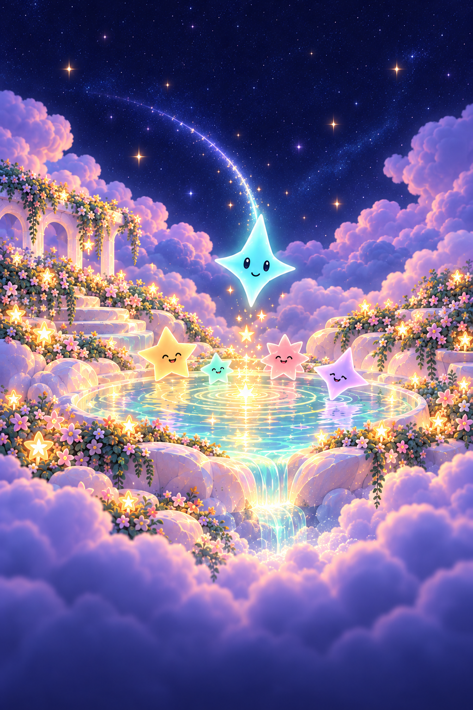

<!doctype html><html lang="en"><meta charset="utf-8"><meta name="viewport" content="width=device-width,initial-scale=1"><title>Starfall — Starlight Garden cover</title><style>*{box-sizing:border-box}html,body{margin:0;min-height:100%;background:#090e2b}body{display:grid;place-items:center;min-height:100svh}.cover{width:min(100vw,calc(100svh * 2 / 3));aspect-ratio:2/3;position:relative;overflow:hidden;isolation:isolate;background:#090e2b}.world{position:absolute;inset:0;width:100%;height:100%;object-fit:cover;z-index:-2}.shade{position:absolute;inset:0;z-index:-1;background:linear-gradient(to bottom,rgba(9,14,43,.1),transparent 28%,transparent 73%,rgba(9,14,43,.48))}.wordmark{position:absolute;left:12%;top:8%;width:76%;height:auto;filter:drop-shadow(0 4px 14px #090e2b66)}.play{position:absolute;left:24%;bottom:7%;width:52%;min-height:44px;height:6.1%;border:1px solid #d5fbff;border-radius:999px;background:linear-gradient(#d2f9ff,#a5e6f4);box-shadow:0 3px 0 #6e94b6,0 10px 35px #0a122855,inset 0 1px 0 #ffffff;display:grid;place-items:center;color:#161f40;font:600 clamp(17px,3.1vw,32px)/1.2 -apple-system,BlinkMacSystemFont,Arial,sans-serif;letter-spacing:.02em;cursor:pointer}.play:focus-visible{outline:3px solid #fff;outline-offset:6px}.play:active{background:#90d3e9;box-shadow:0 1px 0 #6e94b6}.sr{position:absolute;width:1px;height:1px;overflow:hidden;clip-path:inset(50%)}@media(prefers-reduced-motion:reduce){*{scroll-behavior:auto}}</style><main class="cover" aria-label="Starfall cover concept"><div class="shade"></div><h1 class="sr">Starfall</h1><button class="play" type="button" aria-describedby="preview">Play</button><span class="sr" id="preview">Design preview. Gameplay is not connected.</span></main></html>
